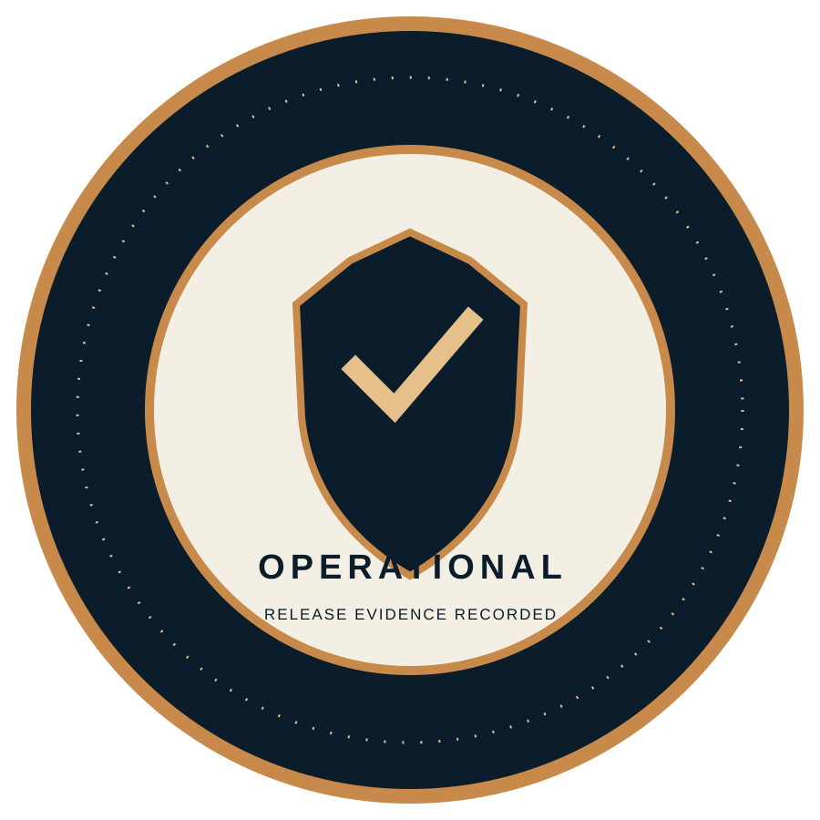

OPERATIONAL GO
CERTOaudit records the public mainnet as operational based on the deployed node, live website, status API, backups, restart recovery, block production, and confirmed transfer evidence.
A validated external assessment of the TSC-1 Rust implementation, covering confidential authorization, consensus, persistence, peer networking, wallet boundaries, and release readiness.


Validated deploymentThe short answer is visible first. The evidence and remediation path follow.
CERTOaudit records the public mainnet as operational based on the deployed node, live website, status API, backups, restart recovery, block production, and confirmed transfer evidence.
Release tests, strict Clippy, rustfmt, Ubuntu sustained throughput, independent synchronization, backup integrity, HTTPS reachability, and native wallet transfer workflow passed at the current checkpoint.
Each item is actionable, scoped, and tied to the current repository state.
The deployed two-row Ristretto authorization path passed mutation, replay, key-image, ring-member, and signer-position validation across the release test suite.
ValidatedTimestamp safeguards, proof-of-work validation, cumulative-work selection, reward maturity, spend-state checks, and bounded block admission are implemented and covered by candidate tests.
ValidatedPublic handshake validation, bounded frames, admission controls, incremental synchronization, and pending-transaction propagation were exercised in the release validation path.
ValidatedAtomic state replacement, restart recovery, single-writer locking, backup integrity, and chain reload checks passed in the recorded operational evidence.
ValidatedLocal signing boundaries, encrypted wallet handling, public Scan access, HTTPS reachability, and the confirmed transfer workflow were verified for this release.
ValidatedTechnical equations are shown for review and reflect the validated operational implementation for the current deployment.
Each confidential amount is represented by a Pedersen commitment with value and blinding components.
A Bulletproofs range proof constrains the committed amount to the allowed unsigned range and rejects malformed or out-of-range values.
The transaction binds input pseudo-output commitments to output commitments and the native fee.
The two-row Ristretto ring proof binds destination ownership, commitment difference, key image, and the signed transaction message.
Current protocol parameters and measured release evidence.
| Maximum supply | 100,000,000 TNB |
| Founder allocation | 10,000,000 TNB |
| Mining allocation | 90,000,000 TNB |
| Block target | 30 seconds |
| Mainnet block limit | 9,000 transactions / block |
| Reward maturity | 10 blocks |
| PoW difficulty | Base 12; maximum 120 |
| Peer limits | Bounded admission, incremental synchronization, and validated pending propagation |
| Frame limits | 64 MiB blocks and bounded transaction batches |
| Mainnet genesis | 58ed7d7dcf4c173a25059585f1b06489a190ee8f42e2e03d5a88b69af65d0652 |
| Sustained Ubuntu run | 20,000 unique signed transactions with ten successor confirmations |
| Average confirmed throughput | 166.68 tx/s |
| Minimum measured interval | 166.14 tx/s |
| Steady measurement window | 89.99 seconds |
| Candidate release suite | 63 passed; 0 failed; 8 intentionally ignored |
| Default regression suite | 55 passed; 0 failed |
| Benchmark scope | Controlled single-node release validation with real persistence and confirmation |
Recorded release checks, regression coverage, and operational evidence.
This CERTOaudit operational assessment records the deployed public service and the evidence reviewed for the 23 September 2026 release checkpoint. The result reflects the current verified implementation, configuration, workload, and operational evidence.
Operational conclusion: the public mainnet, website, persistence, synchronization, recovery, block production, and confirmed transfer workflow are functioning within the validated deployment model at the assessed checkpoint.
Conclusion: OPERATIONAL PUBLIC MAINNET. The reviewed release evidence supports the deployed functionality, validation coverage, and confirmed transfer workflow recorded in this assessment package.